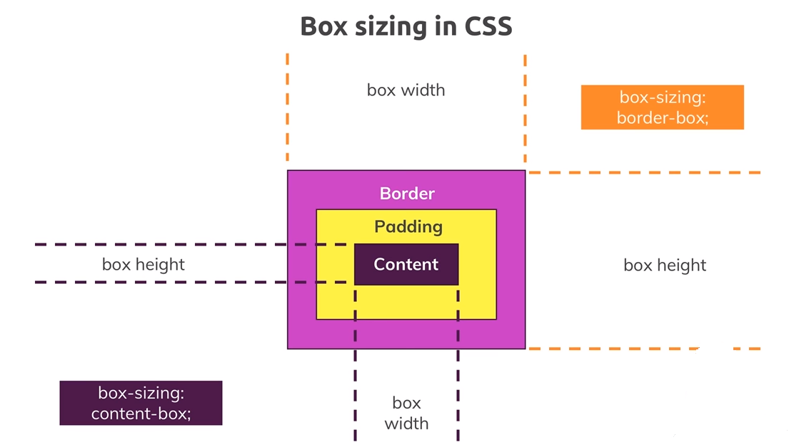
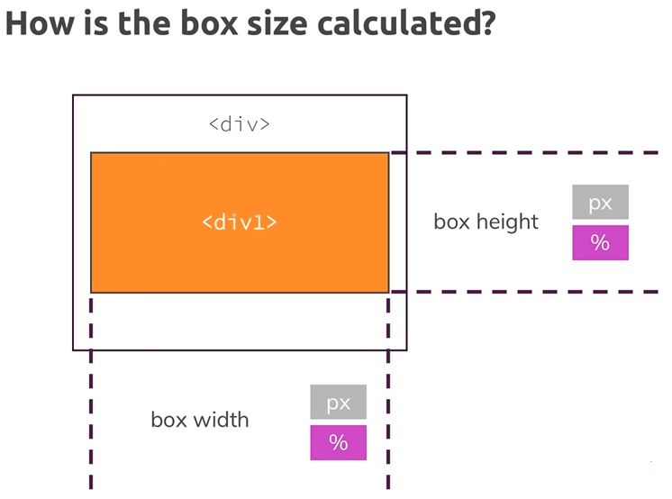
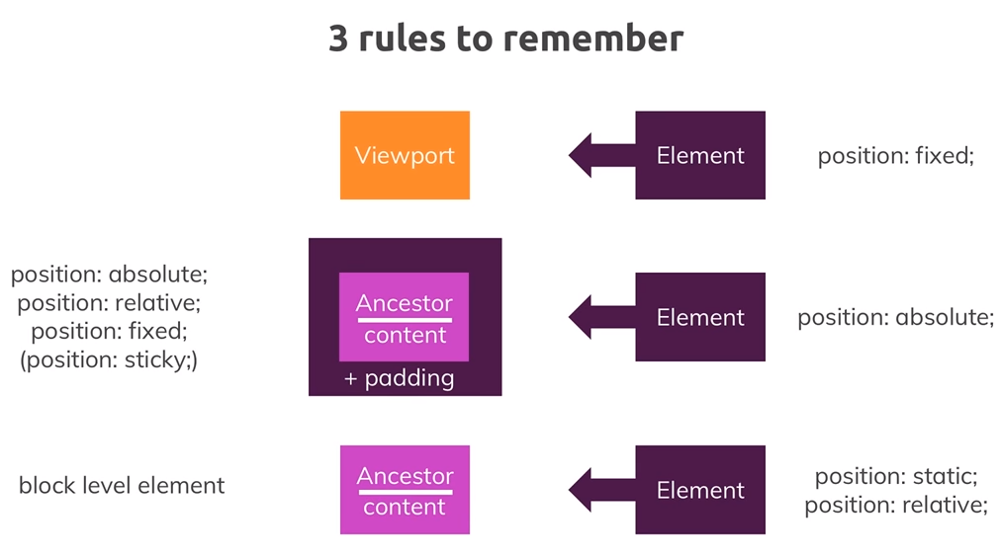
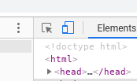

HTML: Elemente
CSS: The Box Model
MDN web docs - box model
- content -> padding -> border -> margin
- Rahmen:
border: <Breite> <Typ> <Farbe>(Beispielborder: 5px solid red;) - Gleichmäiger Abstand: ein Wert (Beispiel
padding: 10px;). - Gleichmäiger Abstand oben/unten und rechts/links: zwei Werte (Beispiel
padding: 10px 5px;). - Individuelle Abstände oben/rechts/unten/links: vier Werte (Beispiel
padding: 30px 20px 10px 5px;). 
CSS: Position
MDN web docs - position
- Document Flow: Position ist
static,absolute,relativeoderfixed(zum Beispielposition: relative) - Position (
top,right,bottomoderleft) und Positioning Context (viewport oder html-Element) - Position Context immer zum Containing Element mit einem definierten Position-Prperty (-Context)
- Position Absolute und Fixed: nicht mehr im normalen Document-Flow bedeutet, dass Block-Level-Element inline sind!
- Position Fixed bezieht sich immer auf den Viewport!
- z-index für überlappende Elemente
CSS: Display
MDN web docs - display
- Display Options:
block,inline,inline-block,flex,noneusw. (zum Beispieldisplay: none) inline: Ausrichtung der Elemente möglich (Beispielvertical-align: middle)block,inline-block: Properties wiewidthundheigthkönnen verwendet werdennone: Elemente verstecken (für JavaScript)
MDN web docs - display flexbox
- Flex Container: Definitionen betreffen alle Flex Items
- Flex Items: Jedes HTML-Element im Flex Container kann individuell angepasst werden
CSS: Display Flex (Flex Container)
Flex Container:
- Parent- oder Wrapping-Element wird Flex Container durch
display: flex, weitere Properties sindflex-flow,justify-content,align-contentoderalign-items - Die Properties werden im CSS des Flex Containers definiert!
flex-flowbenötigt<flex-direction>und<flex-wrap>(Besispielflex-flow: row nowrap)align-itemspasst die Items an die Cross Axis an:stretch,center,flex-startusw.justify-contentpasst die Items an die Main Axis an:stretch,center,flex-startusw.align-contentpasst Platz entlang der Cross Axis (nur bei mehreren Zeilen/Reihen) an- Enthaltene Elemente werden Flex Items, weitere Properties sind
order,flexoderalign-self

CSS: Display Flex (Flex items)
Flex Items:
- Die Properties werden im CSS des jeweiligen Flex Items definiert, das dann eine eigene Klasse benötigt!
orderdefiniert die Reihenfolge (entlang der Main Axis)align-selfdefiniert die Position (entlang der Cross Axis) - Beispielalign-self: flex-startflexdefiniertflex-grow,flex-shrinkundflex-basis(entlang der Main Axis) - Beispielflex: 0 1 autoflex-growder angegebene Faktor definiert in welchem Verhältnis untereinander die Flex Items de freien Platz im Viewport belegenflex-shrinkder angegebene Faktor definiert in welchem Verhältnis untereinander die Flex Items kleiner werden, bis die Größe des Contents erreicht istflex-basisGröße des Flex Items entlang der Main Axis in Pixel etc. oderautofür die vorgegebene width oder height je nach Flex Flow des Containers
CSS: Box Sizing
MDN web docs - box-sizing
- Das Property
box-sizinglegt fest, auf welche Element des Box Models sich Attribute wiewidthoderheightbeziehen - Werte
content-boxfür den Content undborder-boxfür alles außer dem Margin

- Prozentuale Angaben beziehen sich immer auf den Containing Bloc, der je nach Position-Property definiert ist:  
CSS: Fonts
MDN web docs - web fonts
- Font sizing über Pixels, Prozentangaben oder scalable units wie
embzw.rem - Ist keine Font Size angegeben, so wird die Standard-Browsereinstellung (normalerweise 16 Pixels) verwendet
- Einheit
embedeutet "hängt vom Vaterelement ab", Beispielfont-size: 2embedeutet doppelt so groß wie der Font des Containing Elements - Einheit
rembedeutet "hängt vom Root-Element ab", Beispielfont-size: 2rembedeutet doppelt so groß wie das HTML-Element zur zentralen Steuerung der Fontgröße auf einer Seite - Vor Angaben mit
embzw.remkann alls fallback eine Pixel-Angabe stehen, falls ein Browser jene nicht handhaben kann -
Google fonts, z. B. Barlow Condensed mit Import
<link href="https://fonts.googleapis.com/css?family=Barlow+Condensed&display=swap" rel="stylesheet">und Verwendungfont-family: 'Barlow Condensed', sans-serif;im CSS-Selektor
CSS: Media Queries
MDN web docs - media queries
- Mobile-first-Ansatz beachten!!! Webseite erst für kleine Devices testen!
- Die Simulation der Darstellung der Webseite in mobilen Endgeräten kann über Chrome Developer Tools simuliert werden: 
- Falls der Browser die Größe des Viewports nicht automatisch ermitteln kann, im Header folgendes definieren:
<meta name="viewport" content="width=device-width, initial-scale=1.0"/> - Definition über
@media (<Bedingung>) { <CSS> }; Beispiel für Devicegrößen größer 400 Pixel etwas nicht anzeigen@media (min-width: 400px) { .selector { display: none; } }
CSS: Pseudo-Classes
MDN web docs - Pseudo-classes
- Syntax ist
<HTML-Tag>:<Pseudo-Class> { <Rule>; } - Beispiele:
- Mauszeiger ändern, wenn über Images bewegt wird:
img:hover { cursor: pointer; } - Farbe eines Links ändern, wenn gedrückt:
a:active { color: white; }
- Mauszeiger ändern, wenn über Images bewegt wird:
Javascript: Entwicklung
MDN web docs - Event reference
- Wird eingeleitet mit
<script [defer] src="..."></script>bzw.<script>JavaScript</script>, mehrere Tags je File möglich - Falls Javascript im Browser deaktiviert ist, kann mit
<noscript>Nachricht</noscript>ein Text angezeigt werden - Am Ende des HTML-Files plazieren, damit die Webseite ggf. nicht blockiert
- Testumgebungen: